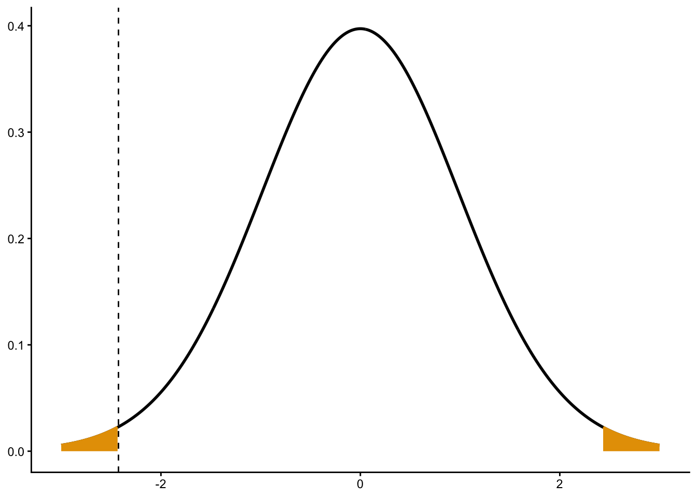

0.02 / 0.04[1] 0.5These practice problems mostly come from Rosner’s publicly available study sheet at the books companion website. The solutions are my own, since we differ slightly on what we are looking for in the solutions.
In a study of the natural history of retinitis pigmentosa (RP), 94 RP patients were followed for 3 years. Among 90 patients with complete follow-up, the mean ±1 se of log (visual-field loss) over 1, 2, and 3 years was \(0.02 \pm 0.04\), \(0.08 \pm 0.05\), and \(0.14 \pm 0.07\), respectively.
What test procedure can be used to test for changes in log (visual field) over any given time period?
A one-sample \(t\)-test on the visual-field loss. This is a also known as a paired \(t\)-test.
Implement the procedure in Problem 8.1 to test for significant changes in visual field over 1 year. Report a p-value.
Let \(X_i\) be the the log loss over year 1 for individual \(i\). Then we assume \(X_i \sim N(\mu, \sigma^2)\). We want to test \(H_0: \mu = 0\) versus \(H_A: \mu \neq 0\). We are told that \(\bar{x} = 0.2\), \(s/\sqrt{n} = 0.04\). Note that we are told “se”, not “sd”. We calculate a \(t\)-statistic \[ \frac{\bar{x} - \mu_0}{s\sqrt{n}} = \frac{0.02}{0.04} \]
0.02 / 0.04[1] 0.5We compare this to a \(t_{n-1} = t_{93}\) distribution
2 * pt(q = -0.5, df = 93)[1] 0.6183Since the \(p\)-value is so large, we do not have evidence that there is on average visual loss after one year.
Answer Problem 8.2 for changes over 2 years.
The same task as Problem 8.1, but with \[ t = 0.08 / 0.05 = 1.6 \] We compare this to a \(t_{n-1} = t_{93}\) distribution

2 * pt(q = -1.6, df = 93)[1] 0.113Since the \(p\)-value is large, we do not have evidence that there is on average visual loss after one year.
Answer Problem 8.2 for changes over 3 years.
The same task as Problem 8.1, but with \[ t = 0.14 / 0.07 = 2 \] We compare this to a \(t_{n-1} = t_{93}\) distribution
2 * pt(q = -2, df = 93)[1] 0.04842The \(p\)-value is somewhat small. So we have weak evidence of a mean visual loss that is different from 0.
The data in the following data frame are measurements from a group of 10 normal males and 11 males with left-heart disease taken at autopsy at a particular hospital. Measurements were made on several variables at that time, and the table presents the measurements on total heart weight (THW) and total body weight (BW). Assume that the diagnosis of left-heart disease is made independently of these variables.
heart <- tibble(
disease_status = c(rep("disease", 11), rep("normal", 10)),
observation_number = c(1:11, 1:10),
thw = c(450, 760, 325, 495, 285, 450, 460, 375, 310, 615, 425,
245, 350, 340, 300, 310, 270, 300, 360, 405, 290),
bw = c(54.6, 73.5, 50.3, 44.6, 58.1, 61.3, 75.3, 41.1, 51.5, 41.7, 59.7,
40.8, 67.4, 53.3, 62.2, 65.5, 47.5, 51.2, 74.9, 59.0, 40.5)
)
glimpse(heart)Rows: 21
Columns: 4
$ disease_status <chr> "disease", "disease", "disease", "disease", "diseas…
$ observation_number <int> 1, 2, 3, 4, 5, 6, 7, 8, 9, 10, 11, 1, 2, 3, 4, 5, 6…
$ thw <dbl> 450, 760, 325, 495, 285, 450, 460, 375, 310, 615, 4…
$ bw <dbl> 54.6, 73.5, 50.3, 44.6, 58.1, 61.3, 75.3, 41.1, 51.…Test for a significant difference in mean total heart weight between the diseased and normal groups. Assume unequal variances. Note that the estimated degrees of freedom turns out to be \(\nu = 12.45\).
Let \(X_i\) be the total heart weight for normal male \(i\). Let \(Y_j\) be the total heart weight for diseased male \(j\). Then we assume \[\begin{align*} X_i &\sim N(\mu_1, \sigma_1^2)\\ Y_j &\sim N(\mu_2, \sigma_2^2) \end{align*}\] We want to test \(H_0: \mu_1 = \mu_2\) versus \(H_A: \mu_1 \neq \mu_2\). We have the following summary statistics:
heart |>
group_by(disease_status) |>
summarize(
xbar = mean(thw),
s_squared = var(thw),
n = n()
)# A tibble: 2 × 4
disease_status xbar s_squared n
<chr> <dbl> <dbl> <int>
1 disease 450 19415 11
2 normal 317 2218. 10We calculate the following \(t\)-statistic \[ t = \frac{\bar{x} - \bar{y}}{\sqrt{\frac{1}{n_1}s_1^2 + \frac{1}{n_2}s_2^2}} = \frac{450 - 317}{\sqrt{\frac{1}{11}19415 + \frac{1}{10}2218}} \] Numerically,
(450 - 317) / sqrt(19415 / 11 + 2218 / 10)[1] 2.984From the question, we are told to compare this to a \(t\) distribution with 12.45 degrees of freedom.
Numerically,
2 * pt(-2.984, df = 12.45)[1] 0.011The \(p\)-value is pretty small, so we have evidence that mean total heart weight differs between diseased and normal individuals.
In R, the real-way would be:
t.test(thw ~ disease_status, data = heart) |>
tidy() |>
select(p.value, estimate, conf.low, conf.high)# A tibble: 1 × 4
p.value estimate conf.low conf.high
<dbl> <dbl> <dbl> <dbl>
1 0.0110 133 36.3 230.We might say something like:
We have strong evidence that mean total heart weight differs between diseased and normal males (p = 0.011). The diseased group is estimated to have a heart size that is 133 larger (95% CI 36.27 to 229.7 larger).
Test for a significant difference in mean body weight between the diseased and normal groups. Assume equal variances.
Let \(X_i\) be the body weight for normal male \(i\). Let \(Y_j\) be the body weight for diseased male \(j\). Then we assume \[\begin{align*} X_i &\sim N(\mu_1, \sigma^2)\\ Y_j &\sim N(\mu_2, \sigma^2) \end{align*}\] We want to test \(H_0: \mu_1 = \mu_2\) versus \(H_A: \mu_1 \neq \mu_2\). We have the following summary statistics:
heart |>
group_by(disease_status) |>
summarize(
xbar = mean(bw),
s_squared = var(bw),
n = n()
)# A tibble: 2 × 4
disease_status xbar s_squared n
<chr> <dbl> <dbl> <int>
1 disease 55.6 133. 11
2 normal 56.2 133. 10We need the pooled sample variance \[ s^2 = \frac{(n_1 - 1)s_1^2 + (n_2 - 1)s_2^2}{n_1 + n_2 - 2} = \frac{(11 - 1)133.4 + (10 - 1)133.1}{11 + 10 - 2} \] Numerically
((11 - 1) * 133.4 + (10 - 1) * 133.1) / (11 + 10 - 2)[1] 133.3We calculate the following \(t\)-statistic \[ t = \frac{\bar{x} - \bar{y}}{s\sqrt{\frac{1}{n_1} + \frac{1}{n_2}}} = \frac{55.61 - 56.23}{\sqrt{133.3}\sqrt{\frac{1}{11} + \frac{1}{10}}} \] Numerically,
(55.61 - 56.23) / (sqrt(133.3) * sqrt(1 / 11 + 1 / 10))[1] -0.1229We compare this to a \(t\) distribution with \(n_1 + n_2 - 2 = 11 + 10 - 2 = 19\) degrees of freedom:

Numerically,
2 * pt(-0.1229, df = 19)[1] 0.9035The \(p\)-value is very large. So we have no evidence in a mean difference in body weight.
In R, the real-way would be:
t.test(bw ~ disease_status, data = heart, var.equal = TRUE) |>
tidy() |>
select(p.value, estimate, conf.low, conf.high)# A tibble: 1 × 4
p.value estimate conf.low conf.high
<dbl> <dbl> <dbl> <dbl>
1 0.903 -0.621 -11.2 9.94We might say something like:
We have no evidence in a difference in mean body weight between the diseased and normal groups (p = 0.9). We estimate that the normal group weigs 0.12 more (95% CI 11.19 more to 9.94 less).
Severe anxiety often occurs in patients who must undergo chronic hemodialysis. A set of progressive relaxation exercises was shown on videotape to a group of 38 experimental subjects, while a set of neutral videotapes was shown to a control group of 23 patients who were also on chronic hemodialysis. The results of a psychiatric questionnaire (the State-Trait Anxiety Inventory) are presented in Table 8.1.
| Table 8.1 | ||||||
|---|---|---|---|---|---|---|
| Pretest and Posttest State-Trait Anxiety means and standard deviations for the experimental and control groups of hemodialysis patients | ||||||
| Group |
Pretest
|
Post-test
|
||||
| Mean | sd | n | Mean | sd | n | |
| Experimental | 37.51 | 10.66 | 38 | 33.42 | 10.18 | 38 |
| Control | 36.42 | 8.59 | 23 | 39.71 | 9.16 | 23 |
Perform a statistical test to compare the experimental and control groups’ pretest scores. Assume equal variances.
Let \(X_i\) be the pretest questionnaire value for experimental individual \(i\). Let \(Y_j\) be the pretest questionnaire value for control individual \(j\). Then we assume \[\begin{align*} X_i &\sim N(\mu_1, \sigma^2)\\ Y_j &\sim N(\mu_2, \sigma^2) \end{align*}\] We want to test \(H_0: \mu_1 = \mu_2\) versus \(H_A: \mu_1 \neq \mu_2\). We need the pooled sample variance \[ s^2 = \frac{(n_1 - 1)s_1^2 + (n_2 - 1)s_2^2}{n_1 + n_2 - 2} = \frac{(38 - 1)10.66^2 + (23 - 1)8.59^2}{38 + 23 - 2} \] Numerically
((38 - 1) * 10.66^2 + (23 - 1) * 8.59^2) / (38 + 23 - 2)[1] 98.78We calculate the following \(t\)-statistic \[ t = \frac{\bar{x} - \bar{y}}{s\sqrt{\frac{1}{n_1} + \frac{1}{n_2}}} = \frac{37.51 - 36.42}{\sqrt{98.78}\sqrt{\frac{1}{38} + \frac{1}{23}}} \] Numerically,
(37.51 - 36.42) / (sqrt(98.78) * sqrt(1 / 38 + 1 / 23))[1] 0.4151We compare this to a \(t\) distribution with \(n_1 + n_2 - 2 = 38 + 23 - 2 = 59\) degrees of freedom:
Numerically,
2 * pt(-0.4151, df = 59)[1] 0.6796The \(p\)-value is very large. So we have no evidence in a mean difference in pre-test values.
Perform a statistical test to compare the experimental and control groups’ posttest scores. Assume equal variances.
Let \(X_i\) be the posttest questionnaire value for experimental individual \(i\). Let \(Y_j\) be the posttest questionnaire value for control individual \(j\). Then we assume \[\begin{align*} X_i &\sim N(\mu_1, \sigma^2)\\ Y_j &\sim N(\mu_2, \sigma^2) \end{align*}\] We want to test \(H_0: \mu_1 = \mu_2\) versus \(H_A: \mu_1 \neq \mu_2\). We need the pooled sample variance \[ s^2 = \frac{(n_1 - 1)s_1^2 + (n_2 - 1)s_2^2}{n_1 + n_2 - 2} = \frac{(38 - 1)10.18^2 + (23 - 1)9.16^2}{38 + 23 - 2} \] Numerically
((38 - 1) * 10.18^2 + (23 - 1) * 9.16^2) / (38 + 23 - 2)[1] 96.28We calculate the following \(t\)-statistic \[ t = \frac{\bar{x} - \bar{y}}{s\sqrt{\frac{1}{n_1} + \frac{1}{n_2}}} = \frac{33.42 - 39.71}{\sqrt{96.28}\sqrt{\frac{1}{38} + \frac{1}{23}}} \] Numerically,
(33.42 - 39.71) / (sqrt(96.28) * sqrt(1 / 38 + 1 / 23))[1] -2.426We compare this to a \(t\) distribution with \(n_1 + n_2 - 2 = 38 + 23 - 2 = 59\) degrees of freedom:

Numerically,
2 * pt(-2.426, df = 59)[1] 0.01834The \(p\)-value is pretty small. So we have some evidence in a mean difference in posttest values.
Blood-pressure measurements taken on the left and right arms of a person are assumed to be comparable. To test this assump- tion, 10 volunteers are obtained and systolic blood-pressure readings are taken simultaneously on both arms by two different observers, Ms. Jones for the left arm and Mr. Smith for the right arm. The data are given in the following data frame.
armbp <- tibble(
Patient = 1:10,
Left_arm = c(130, 120, 135, 100, 98, 110, 123, 136, 140, 155),
Right_arm = c(126, 124, 127, 95, 102, 109, 124, 132, 137, 156)
)
armbp# A tibble: 10 × 3
Patient Left_arm Right_arm
<int> <dbl> <dbl>
1 1 130 126
2 2 120 124
3 3 135 127
4 4 100 95
5 5 98 102
6 6 110 109
7 7 123 124
8 8 136 132
9 9 140 137
10 10 155 156Assuming that the two observers are comparable, test whether or not the two arms give comparable readings.
Suppose we do not assume that the two observers are comparable. Can the experiment, as it is defined, detect differences between the two arms? If not, can you suggest an alternative experimental design so as to achieve this aim?
A topic of current interest in ophthalmology is whether or not spherical refraction is different between the left and right eyes. For this purpose refraction is measured in both eyes of 17 people. The data are given in the following data frame.
refract <- tibble(
id = 1:17,
od = c(1.75, -4, -1.25, 1, -1, -0.75, -2.25, 0.25, 0,
-1, 0.5, -8.5, 0.5, -5.25, -2.25, -6.5, 1.75),
os = c(2, -4, -1, 1, -1, 0.25, -2.25, 0.25, 0.5, -1.25,
-1.75, -5, 0.5, -4.75, -2.5, -6.25, 1.75)
) |>
mutate(diff = od - os)
refract# A tibble: 17 × 4
id od os diff
<int> <dbl> <dbl> <dbl>
1 1 1.75 2 -0.25
2 2 -4 -4 0
3 3 -1.25 -1 -0.25
4 4 1 1 0
5 5 -1 -1 0
6 6 -0.75 0.25 -1
7 7 -2.25 -2.25 0
8 8 0.25 0.25 0
9 9 0 0.5 -0.5
10 10 -1 -1.25 0.25
11 11 0.5 -1.75 2.25
12 12 -8.5 -5 -3.5
13 13 0.5 0.5 0
14 14 -5.25 -4.75 -0.5
15 15 -2.25 -2.5 0.25
16 16 -6.5 -6.25 -0.25
17 17 1.75 1.75 0 Is a one-sample or two- sample test needed here?
Is a one-sided or two-sided test needed here?
Which of the following test procedures is appropriate to use on these data? (More than one may be necessary.)
Carry out the hypothesis test(s) in Problem 8.15 and report a p-value.
Estimate a 90% CI for the mean difference in spherical refraction between the two eyes.
A study was performed in 1976 to relate the use of oral contraceptives to the levels of various lipid fractions in a group of 163 nonpregnant, premenopausal women ages 21–39. The mean serum cholesterol among 66 current users of oral contraceptives was 201 ± 37 (mg/dL) (mean ± sd), whereas for 97 nonusers it was 193 ± 37 (mg/dL).
Test for significant differences in mean cholesterol levels between the two groups.
Report a p-value based on your hypothesis test in Problem 8.18.
Derive a 95% CI for the true mean difference in cholesterol levels between the groups.
Suppose the two-tailed p-value in Problem 8.19 = .03 and the two-sided 95% CI in Problem 8.20 = (−0.6, 7.3). Do these two results contradict each other? Why or why not? (Note: These values are not necessarily the actual results in Problems 8.19 and 8.20.)
A 1982 study by the Lipid Research CIinics looked at the relationship between alcohol consumption and level of systolic blood pressure in women not using oral contraceptives. Alcohol consumption was categorized as follows: no alcohol use; ≤ 10 oz/week alcohol consumption; > 10 oz/week alcohol consumption. The results for women 30–39 years of age are given in Table 8.4.
Suppose we wish to compare the levels of systolic blood pressure of groups A and B and we have no prior information regarding which group has higher blood pressure.
| Table 8.4 | |||
|---|---|---|---|
| Relationship between systolic blood pressure and alcohol consumption in 30–39-year-old women not using oral contraceptives | |||
| Alcohol Consumption |
Systolic blood pressure (mm Hg)
|
||
| Mean | SD | N | |
| No alcohol use | 110.5 | 13.3 | 357 |
| ≤10 oz per week | 109.1 | 13.4 | 440 |
| >10 oz per week | 114.5 | 14.9 | 23 |
Should a one-sample or two-sample test be used here?
Should a one-sided or two-sided test be used here?
Which test procedure(s) should be used to test the preceding hypotheses?
Carry out the test in Problem 8.24 and report a p-value.
Compute a 95% CI for the mean difference in blood pressure between the two groups.
Answer Problem 8.24 for a comparison of groups A and C.
Answer Problem 8.25 for a comparison of groups A and C.
Answer Problem 8.26 for a comparison of groups A and C.
Forced expiratory volume (FEV) is a standard measure of pul- monary function representing the volume of air expelled in 1 second. Suppose we enroll 10 nonsmoking males age 35–39, heights 68–72 inches in a longitudinal study and measure their FEV (L) initially (year 0) and 2 years later (year 2). The data in in the following data frame are obtained.
pulm <- tibble(
person = 1:10,
fev0 = c(3.22, 4.06, 3.85, 3.50, 2.80, 3.25, 4.20, 3.05, 2.86, 3.50),
fev2 = c(2.95, 3.75, 4.00, 3.42, 2.77, 3.20, 3.90, 2.76, 2.75, 3.32)
)
pulm# A tibble: 10 × 3
person fev0 fev2
<int> <dbl> <dbl>
1 1 3.22 2.95
2 2 4.06 3.75
3 3 3.85 4
4 4 3.5 3.42
5 5 2.8 2.77
6 6 3.25 3.2
7 7 4.2 3.9
8 8 3.05 2.76
9 9 2.86 2.75
10 10 3.5 3.32With these summary statistics
| variable | mean | sd |
|---|---|---|
| fev0 | 3.429 | 0.4852 |
| fev2 | 3.282 | 0.4798 |
What are the appropriate null and alternative hypotheses in this case to test if mean pulmonary function has decreased over 2 years?
In words, what is the meaning of a type I and a type II error here?
Carry out the test in Problem 8.30. What are your conclusions?
Another aspect of the preceding study involves looking at the effect of smoking on baseline pulmonary function and on change in pulmonary function over time. We must be careful, since FEV depends on many factors, particularly age and height. Suppose we have a comparable group of 15 men in the same age and height group as in Table 8.5 who are smokers, and we measure their FEV at year 0 and year 2. The data are given in the following data frame.
pulm2 <- tibble(
person = 1:15,
fev0 = c(2.85, 3.32, 3.01, 2.95, 2.78, 2.86, 2.78, 2.90,
2.76, 3.00, 3.26, 2.84, 2.50, 3.59, 3.30),
fev2 = c(2.88, 3.40, 3.02, 2.84, 2.75, 3.20, 2.96, 2.74,
3.02, 3.08, 3.00, 3.40, 2.59, 3.29, 3.32)
)
pulm2# A tibble: 15 × 3
person fev0 fev2
<int> <dbl> <dbl>
1 1 2.85 2.88
2 2 3.32 3.4
3 3 3.01 3.02
4 4 2.95 2.84
5 5 2.78 2.75
6 6 2.86 3.2
7 7 2.78 2.96
8 8 2.9 2.74
9 9 2.76 3.02
10 10 3 3.08
11 11 3.26 3
12 12 2.84 3.4
13 13 2.5 2.59
14 14 3.59 3.29
15 15 3.3 3.32With these summary statistics:
| variable | mean | sd |
|---|---|---|
| fev0 | 2.980 | 0.2786 |
| fev2 | 3.033 | 0.2504 |
What are the appropriate null and alternative hypotheses to compare the FEV of smokers and nonsmokers at baseline?
Carry out the procedure(s) necessary to conduct the test in Problem 8.33.
Suggest a procedure for testing whether or not the change in pulmonary function over 2 years is the same in the two groups.
A study of the relationship between salt intake and blood pressure of infants is in the planning stages. A pilot study is done, comparing five 1-year-old infants on a high-salt diet with five 1-year-old infants on a low-salt diet. The results are given in Table 8.7.
| Table 8.7 | |||
|---|---|---|---|
| Relationship between salt intake and level of systolic blood pressure (SBP) | |||
| Mean SBP | sd SBP | n | |
| High-salt diet | 90.8 | 10.3 | 5 |
| Low-salt diet | 87.2 | 9.2 | 5 |
If the means and standard deviations in Table 8.7 are considered to be true population parameters, then, using a one-sided test with significance level = .05 , how many infants are needed in each group to have an 80% chance of detecting a significant difference?
Suppose it is easier to recruit high-salt-diet infants and the investigators decide to enroll twice as many high- salt-diet infants as low-salt-diet infants. How many infants are needed in each group to have a 80% chance of detecting a significant difference using a one-sided test with an α level of .05?
Suppose the budget will only allow for recruiting 50 high-salt-diet and 50 low-salt-diet infants into the study. How much power would such a study have of detecting a significant difference using a one-sided test with significance level = .05 if the true difference between the groups is 5 mm Hg?
Answer Problem 8.38 for a true difference of 2 mm Hg.
Answer Problem 8.38 if a two-sided test is used and the true difference is 5 mm Hg.
Answer Problem 8.40 if the true difference is 2 mm Hg.
The effect of sodium restriction on blood pressure remains a controversial subject. To test this hypothesis a group of 83 individuals participated in a study of restricted sodium intake ( ≤ 75 mEq/24 hrs) for a period of 12 weeks. The effect on diastolic blood pressure (DBP) is reported in Table 8.8.
| Table 8.8 | |||||||||
|---|---|---|---|---|---|---|---|---|---|
| Effect of sodium restriction on diastolic blood pressure | |||||||||
Baseline period
|
Diet period
|
Change from control (diet-baseline)
|
|||||||
| Mean | sd | n | Mean | sd | n | Mean | sd | n | |
| Age < 40 | 69.7 | 8.5 | 61 | 69.1 | 8.5 | 61 | -0.7 | 6.2 | 61 |
| Age ≥ 40 | 77 | 8 | 22 | 71.9 | 7.5 | 22 | -5.0 | 4.7 | 22 |
| Total | -1.8 | 6.1 | 83 | ||||||
What is the appropriate procedure to test for whether sodium restriction has had an impact on mean DBP?
Implement the procedure in Problem 8.42 for people age < 40 using the critical-value method.
One of the interesting findings is the difference in response to dietary therapy between people in the two age groups.
Test the hypothesis that the response to sodium restriction is different in the two groups and report a p- value.
Obtain a 95% CI for the response to dietary therapy in each age group separately.
Obtain a 95% CI for the difference in response between the 2 age groups.
Suppose the results of this study are to be used to plan a larger study on the effects of sodium restriction on DBP.
How many subjects need to be enrolled in the larger study to test if sodium restriction results in lower DBP if the mean and sd of decline in DBP over the total group of 83 subjects are used for planning purposes and a 90% chance of detecting a significant difference using a two-sided test with a 5% level of significance is desired?
Suppose 200 patients are enrolled in the larger study. How much power would the larger study have if a two- sided test with significance level = .05 is used?
A study was conducted relating lead level in umbilical cord blood and cognitive development. Three groups were identified at birth (high/medium/low) cord blood lead. One issue is the consistency of the differences in blood-lead levels over time between these three groups. The data in Table 8.9 were presented.
| Table 8.9 | ||||||
|---|---|---|---|---|---|---|
| Change in blood-lead level in the first two years of life by cord blood-lead group | ||||||
| Cord blood-lead group | Birth | 6 months | 12 months | 18 months | 24 months | |
| Low | Mean ± sd | 1.8 ± 0.6 | 4.6 ± 3.9 | 5.8 ± 5.1 | 6.7 ± 5.5 | 5.4 ± 4.8 |
| n | 85 | 70 | 69 | 65 | 61 | |
| Medium | Mean ± sd | 6.5 ± 0.3 | 7.0 ± 7.8 | 8.5 ± 7.6 | 8.3 ± 5.8 | 7.2 ± 5.0 |
| n | 88 | 70 | 70 | 65 | 63 | |
| High | Mean ± sd | 14.76 ± 3.0 | 7.0 ± 8.7 | 8.8 ± 6.4 | 7.6 ± 5.8 | 7.7 ± 8.5 |
| n | 76 | 61 | 60 | 57 | 58 | |
What test procedure can be used to test if there are differences between the observed blood-lead levels at 24 months between the low and high groups (as defined at baseline)?
Implement the test procedure in Problem 8.49 and report a p-value.
Provide a 95% CI for the difference in mean blood lead levels between the low and high groups at 24 months.
Retinitis pigmentosa (RP) is the name given to a family of inherited retinal degenerative diseases that may be transmitted through various modes of inheritance. The most common features include a history of night blindness, loss of visual field, and pigment clumping in the retina. Several reports of lipid abnormalities have been reported in RP patients. However, a consistent trend as regards either excesses or deficiencies in lipid levels has not been apparent. In one study, fatty-acid levels were measured in a group of RP patients and normal controls. The data in Table 8.10 were reported on one particular fatty acid (docosahexaenoic acid) (labeled 22:6w3) in individuals with dominant disease and normal controls.
| Table 8.10 | |||
|---|---|---|---|
| Mean levels of plasma 22:6w3 (adjusted for age) (Units are nmol/mL plasma) | |||
| Mean | sd | n | |
| Dominant affected individuals | 34.8 | 20.8 | 36 |
| Normal controls | 47.8 | 30.3 | 68 |
What is an appropriate procedure to test if the mean level of 22:6w3 differs between dominant affected individuals and normal controls? State the hypotheses being tested. Is a one-sided or a two-sided test appropriate here?
Perform the hypothesis test in Problem 8.52 and report a p-value.
Provide a 95% CI for the difference in means between the two groups. What does it mean in words?
An article published in 1986 describes physical, social, and psychological problems in patients with multiple sclerosis. Patients were classified as to mild, moderate, and severe disease and were graded on physical health using the McMaster physical health index, and mental health using the Rand mental health index scale. The data are shown in Table 8.11.
| Table 8.11 | ||||||
|---|---|---|---|---|---|---|
| Physical and mental health indices for patients with multiple sclerosis | ||||||
Mild
|
Severe
|
|||||
| Mean | sd | n | Mean | sd | n | |
| McMaster physical health index | 0.76 | 0.24 | 65 | 0.23 | 0.12 | 82 |
| Rand mental health index | 157.30 | 26.20 | 65 | 149.10 | 34.40 | 82 |
What test procedure should be used to test if there are differences in physical health between the two groups?
Perform the test in Problem 8.55 with the critical-value method using a two-sided test with an a level of .05.
What test procedure should be used to test if there are differences in mental health between the two groups?
Perform the test in Problem 8.57 with the critical-value method using an α level of .05.
What is the most accurate p-value corresponding to your answer to Problem 8.58?
As one component of a study of blood pressure (BP) response to nonpharmacologic interventions, subjects with high normal BP (DBP of 80-89) who were moderately overweight were randomized to either an active weight-loss intervention or a control group. Blood-pressure measurements were taken both at baseline and after 18 months of intervention and follow-up. Using change in blood pressure over this period as the outcome, the data in Table 8.12 were obtained for diastolic blood pressure (DBP).
| Table 8.12 | |||
|---|---|---|---|
| Comparison of change in DBP between the weight loss versus the control group | |||
| Treatment Group |
Change in DBP (mm Hg)
|
||
| n | Mean | sd | |
| Weight loss | 308 | -6.16 | 5.88 |
| Control | 246 | -3.91 | 6.12 |
Assuming that the variances are equal in the two groups, test whether there was a significant difference in mean DBP change between the weight-loss versus the control group.
Researchers were also interested in the amount of weight loss attributable to the intervention. Mean weight change for each group is given in Table 8.13.
| Table 8.13 | |||
|---|---|---|---|
| Comparison of change in weight between the weight-loss group versus the control group | |||
| Treatment Group |
Change in weight* (kg)
|
||
| n | Mean | sd | |
| Weight loss | 293 | -3.83 | 6.12 |
| Control | 235 | 0.07 | 4.01 |
| *18 month weight-baseline weight | |||
Test whether the variances are the same in the weight- loss and control groups.
Test whether the intervention was effective in reducing weight in the weight-loss versus the control group.
A study is planned of the effect of drug therapy with cholesterol-lowering drugs on the coronary arteries of patients with severe angina. A pilot study was performed whereby each patient received the placebo treatment and had an angiogram at baseline and again three years later at follow-up. The average diameter of three coronary arteries was measured at baseline and follow-up. The results are given in Table 8.14.
| Table 8.14 | ||
|---|---|---|
| Change in diameter of coronary arteries in patients with severe angina | ||
| Mean change* | sd | n |
| -0.049 | 0.237 | 8 |
| *Follow-up - baseline | ||
Suppose we wish to test the hypothesis that there has been significant change over 3 years in the placebo group.
What test should be used to test this hypothesis?
Implement the test in Problem 8.63 and report a p-value.
Suppose it is assumed that the mean change over 3 years would be 0 for an active drug group and –0.049 for a placebo group. We intend to randomize subjects to placebo and active drug and compare the mean change in the two groups, How much power would the proposed study have if 500 subjects in each of the drug and placebo groups are available to participate in the study, a two-sided test is used with α = .05 and the variances in each group are assumed to be the same?
A family-based behavior-change program was used to modify cardiovascular risk factors among teenage children of patients with ischemic heart disease. The mean baseline level and change in HDL-cholesterol level after a 6-month period in the program is given in Table 8.15.
| Table 8.15 | |||
|---|---|---|---|
| Mean baseline level and change in HDL-cholesterol level (mmol/L) among teenage children over a 6-month period | |||
| Mean | sd | n | |
| Baseline | 1.20 | 0.32 | 44 |
| 6-months | 1.12 | 0.35 | 44 |
| Difference (6-months - Baseline) | -0.08 | 0.23 | 44 |
What test procedure can be used to test if there has been a change in mean HDL-cholesterol levels among teenage children who undergo such a program?
Implement the test procedure mentioned in Prob- lem 8.66 and report a p-value (two-sided) as precisely as possible using the appropriate tables.
Provide a 95% CI for the true mean change over 6 months among teenage children exposed to the program.
Suppose the results in Problem 8.67 are statistically significant (they may or may not be). Does this necessarily mean that the education program per se is the reason why the HDL-cholesterol levels have changed? If not, is there some way to change the design to allow us to be more confident about the specific effects of the education program?
A study was performed comparing the rate of bone formation between black and white adults. The data in Table 8.16 were presented.
| Table 8.16 | ||
|---|---|---|
| Comparison of bone-formation rate between black versus white adults | ||
| Blacks (n = 12) Mean ± se | Whites (n = 13) Mean ± se | |
| Bone-formation rate | 0.033 ± 0.007 | 0.095 ± 0.012 |
What method can be used to compare mean bone-formation rate between blacks and whites?
Implement the method in Problem 8.70 and report a p-value.
Obtain a 95% CI for the mean difference in bone-formation rate between the two groups.
One goal of an exercise training program is to improve the physical fitness of individuals as measured by their resting heart rate. Suppose it is known that the mean resting heart rate of a group of sedentary individuals is 85 beats/min with a sd of 10 beats/min. A clinical trial is proposed where half the subjects will be randomized to a low intensity exercise program (group A), while the other half will get no exercise training (group B). It is expected that after 6 months, the mean resting heart rate of group A will decline by 3 beats/min while group B will show no mean change in resting heart rate. Assume that the correlation coefficient between resting heart rate measured 6 months apart in the same individual is .8.
How many subjects are needed in each group to achieve an 80% power if a two-sided test is used with significance level of .05?
Suppose that 50 subjects are randomized to each group. How much power will the study have if a 2-sided test is used with a significance level of .05?